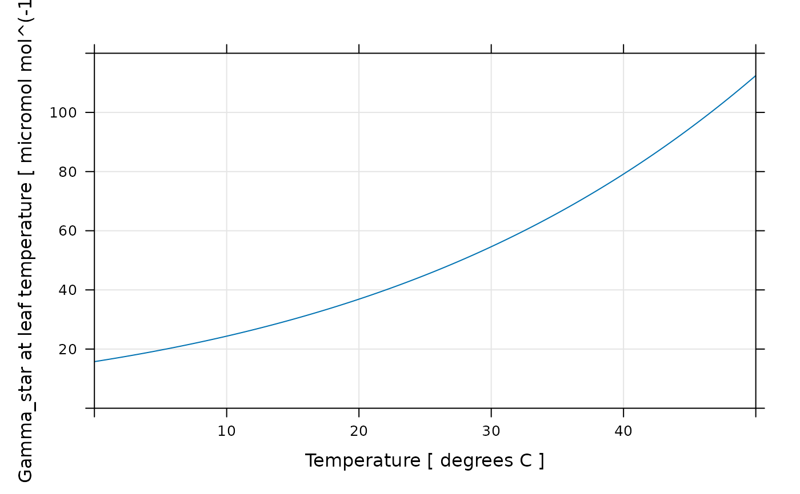
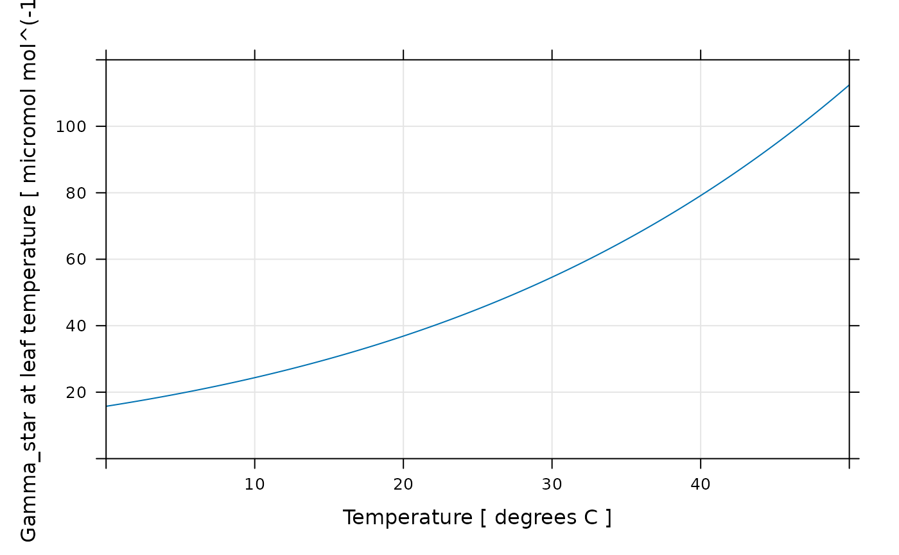

Calculate Gamma_star from Rubisco specificity
calculate_gamma_star.RdCalculates the CO2 compensation point in the absence of day respiration
(Gamma_star) from the Rubisco specificity (on a molarity basis), the
oxygen concentration (as a percentage), and the temperature-dependent
solubilities of CO2 and O2 in H2O.
Usage
calculate_gamma_star(
exdf_obj,
alpha_pr = 0.5,
oxygen_column_name = 'oxygen',
specificity_at_tleaf_column_name = 'specificity_at_tleaf',
tleaf_column_name = 'TleafCnd'
)Arguments
- exdf_obj
An
exdfobject.- alpha_pr
The number of CO2 molecules released by the photorespiratory cycle following each RuBP oxygenation.
- oxygen_column_name
The name of the column in
exdf_objthat contains the concentration of O2 in the ambient air, expressed as a percentage (commonly 21% or 2%); the units must bepercent.- specificity_at_tleaf_column_name
The name of the column in
exdf_objthat contains the Rubisco specificityS_aqat the leaf temperature; the units must beM / M, where the molarityMis moles of solute per mole of solvent.- tleaf_column_name
The name of the column in
exdf_objthat contains the leaf temperature indegrees C.
Details
The CO2 compensation point in the absence of day respiration
(Gamma_star) is the partial pressure of CO2 in the chloroplast at which
photorespiration exactly balances CO2 assimilation; this quantity plays a key
role in many photosynthesis calculations. One way to calculate its value is to
use its definition, which can be found in many places, such as Equation 2.17
from von Caemmerer (2000):
Gamma_star = alpha_pr * O / S,
where O is the partial pressure (or mole fraction) of oxygen in the
chloroplast, S is the Rubisco specificity on a gas basis, and
alpha_pr is the number of CO2 molecules released by the
photorespiratory cycle following each RuBP oxygenation (usually assumed to be
0.5).
The Rubisco specificity is often measured from an aqueous solution where the concentrations of O2 and CO2 are specified as molarities (moles of dissolved CO2 or O2 per mole of H2O). In this context, the equation above becomes
Gamma_star_aq = alpha_pr * O_aq / S_aq,
where Gamma_star_aq and O_aq are the molarities of CO2 and O2
corresponding to Gamma_star and O under the measurement
conditions and S_aq is the specificity on a molarity basis.
Henry's law can be used to relate these two versions of the equation; Henry's
law states that the concentration of dissolved gas is proportional to the
partial pressure of that gas outside the solution. The proportionality factor
H is called Henry's constant (or sometimes the solubility), and its
value depends on the temperature, gas species, and other factors. Using
Henry's law, we can write Gamma_star_aq = Gamma_star_aq * H_CO2 and
O = O_aq * H_O2, where H_CO2 is Henry's constant for CO2
dissolved in H2O and H_O2 is Henry's constant for O2 dissolved in H2O.
With these replacements, we can re-express the equation above as:
Gamma_star / H_CO2 = alpha_pr * (O / H_O2) / S_aq
Solving for Gamma_star, we see that:
Gamma_star = (alpha_pr * O / S_aq) * (H_CO2 / H_O2).
In other words, both the Rubisco specificity (as measured on a molarity basis)
and the ratio of the two Henry's constants (H_CO2 / H_O2) play a role
in determining Gamma_star. This equation also shows that it is possible
to relate S (the specificity on a gas concentration basis) and
S_aq as S = S_aq * H_O2 / H_CO2.
The values of H_O2 and H_CO2 can be calculated from the
temperature using Equation 18 from Tromans (1998) and Equation 4 from Carroll
et al. (1991), respectively.
In calculate_gamma_star, it is assumed that the value of specificity
S_aq was was measured or otherwise determined at the leaf temperature;
the leaf temperature is only used to determine the values of the two Henry's
constants. Sometimes it is necessary to calculate the temperature-dependent
value of the specificity using an Arrhenius equation; this can be accomplished
via the calculate_arrhenius function from PhotoGEA.
Finally, it is important to note that Gamma_star can also be directly
calculated using an Arrhenius equation, rather than using the oxygen
concentration and the specificity. The best approach for determining a value
of Gamma_star in any particular situation will generally depend on the
available information and the measurement conditions.
References:
von Caemmerer, S. "Biochemical Models of Leaf Photosynthesis." (CSIRO Publishing, 2000) [doi:10.1071/9780643103405 ].
Carroll, J. J., Slupsky, J. D. and Mather, A. E. "The Solubility of Carbon Dioxide in Water at Low Pressure." Journal of Physical and Chemical Reference Data 20, 1201–1209 (1991) [doi:10.1063/1.555900 ].
Tromans, D. "Temperature and pressure dependent solubility of oxygen in water: a thermodynamic analysis." Hydrometallurgy 48, 327–342 (1998) [doi:10.1016/S0304-386X(98)00007-3 ].
Value
An exdf object based on exdf_obj that includes the following
additional columns, calculated as described above: Gamma_star,
H_CO2, H_O2, and specificity_gas_basis. There are many
choices for expressing Henry's constant values; here we express them as
molalities per unit of pressure: (mol solute / kg H2O) / Pa. The
category for each of these new columns is calculate_gamma_star to
indicate that they were created using this function.
Examples
# Example 1: Calculate Gamma_star for each point in a gas exchange log file
licor_data <- read_gasex_file(
PhotoGEA_example_file_path('licor_for_gm_site11.xlsx'),
)
licor_data <- get_oxygen_from_preamble(licor_data)
licor_data <- set_variable(
licor_data,
'specificity_at_tleaf',
'M / M',
value = 90
)
licor_data <- calculate_gamma_star(licor_data)
licor_data[, c('specificity_gas_basis', 'oxygen', 'Gamma_star'), TRUE]
#> specificity_gas_basis [calculate_gamma_star] (Pa / Pa) oxygen [in] (percent)
#> 1 2378.089 21
#> 2 2377.985 21
#> 3 2378.894 21
#> 4 2378.495 21
#> 5 2378.103 21
#> 6 2378.007 21
#> 7 2378.321 21
#> 8 2379.270 21
#> 9 2378.403 21
#> 10 2377.187 21
#> 11 2374.764 21
#> 12 2366.224 21
#> Gamma_star [calculate_gamma_star] (micromol mol^(-1))
#> 1 44.15310
#> 2 44.15502
#> 3 44.13815
#> 4 44.14556
#> 5 44.15284
#> 6 44.15463
#> 7 44.14879
#> 8 44.13118
#> 9 44.14726
#> 10 44.16985
#> 11 44.21492
#> 12 44.37449
# Example 2: Calculate Gamma_star at 21% and 2% oxygen for a Rubisco whose
# specificity was measured to be 100 M / M at 25 degrees C.
exdf_obj <- calculate_gamma_star(
exdf(
data.frame(
oxygen = c(2, 21),
specificity_at_tleaf = c(100, 100),
TleafCnd = c(25, 25)
),
data.frame(
oxygen = 'percent',
specificity_at_tleaf = 'M / M',
TleafCnd = 'degrees C',
stringsAsFactors = FALSE
)
)
)
exdf_obj[, c('specificity_gas_basis', 'oxygen', 'Gamma_star'), TRUE]
#> specificity_gas_basis [calculate_gamma_star] (Pa / Pa) oxygen [NA] (percent)
#> 1 2722.195 2
#> 2 2722.195 21
#> Gamma_star [calculate_gamma_star] (micromol mol^(-1))
#> 1 3.673506
#> 2 38.571815
# Example 3: Here we recreate Figure 1 from Long, S. P. "Modification of the
# response of photosynthetic productivity to rising temperature by atmospheric
# CO2 concentrations: Has its importance been underestimated?" Plant, Cell and
# Environment 14, 729–739 (1991). This is a fairly complicated example where
# Arrhenius constants for Rubisco parameters are determined by fitting
# published data and then used to determine the Rubisco specificity across a
# range of temperatures.
# Specify leaf temperature and oxygen concentration
leaf_temp <- seq(0, 50, by = 0.1)
exdf_obj <- exdf(
data.frame(
oxygen = rep_len(21, length(leaf_temp)),
TleafCnd = leaf_temp
),
data.frame(
oxygen = 'percent',
TleafCnd = 'degrees C',
stringsAsFactors = FALSE
)
)
# Get Arrhenius constants for Rubisco parameters using data from Table 2 of
# Jordan, D. B. and Ogren, W. L. "The CO2/O2 specificity of ribulose
# 1,5-bisphosphate carboxylase/oxygenase" Planta 161, 308–313 (1984).
rubisco_info <- data.frame(
temperature = c(7, 12, 15, 25, 30, 35),
Vc = c(0.13, 0.36, 0.63, 1.50, 1.90, 2.90),
Kc = c(2, 3, 4, 11, 14, 19),
Ko = c(550, 510, 510, 500, 600, 540),
Vo = c(0.24, 0.48, 0.69, 0.77, 1.1, 1.3)
)
rubisco_info$x <- 1 / (8.314e-3 * (rubisco_info$temperature + 273.15))
lm_Vc <- stats::lm(log(Vc) ~ x, data = rubisco_info)
lm_Kc <- stats::lm(log(Kc) ~ x, data = rubisco_info)
lm_Ko <- stats::lm(log(Ko) ~ x, data = rubisco_info)
lm_Vo <- stats::lm(log(Vo) ~ x, data = rubisco_info)
arrhenius_info <- list(
Vc = list(
c = as.numeric(lm_Vc$coefficients[1]),
Ea = -as.numeric(lm_Vc$coefficients[2]),
units = 'micromol / mg / min'
),
Kc = list(
c = as.numeric(lm_Kc$coefficients[1]),
Ea = -as.numeric(lm_Kc$coefficients[2]),
units = 'microM'
),
Ko = list(
c = as.numeric(lm_Ko$coefficients[1]),
Ea = -as.numeric(lm_Ko$coefficients[2]),
units = 'microM'
),
Vo = list(
c = as.numeric(lm_Vo$coefficients[1]),
Ea = -as.numeric(lm_Vo$coefficients[2]),
units = 'micromol / mg / min'
)
)
# Get temperature-dependent values of Rubisco parameters using Arrhenius
# equations
exdf_obj <- calculate_arrhenius(
exdf_obj,
arrhenius_info
)
# Calculate temperature-dependent specificity values
exdf_obj <- set_variable(
exdf_obj,
'specificity_at_tleaf',
units = 'M / M',
value = exdf_obj[, 'Vc'] * exdf_obj[, 'Ko'] /
(exdf_obj[, 'Vo'] * exdf_obj[, 'Kc'])
)
# Calculate Gamma_star and Henry constants
exdf_obj <- calculate_gamma_star(exdf_obj)
# Make a plot similar to Figure 1 from Long (1991)
lattice::xyplot(
specificity_at_tleaf + H_CO2 / H_O2 ~ TleafCnd,
data = exdf_obj$main_data,
auto = TRUE,
grid = TRUE,
type = 'l',
xlim = c(0, 50),
ylim = c(0, 250),
xlab = "Temperature [ degrees C ]",
ylab = "Rubisco specificity or ratio of Henry's constants (H_CO2 / H_O2)\n[ dimensionless ]"
)
 # We can also make a plot of Gamma_star across this range
lattice::xyplot(
Gamma_star ~ TleafCnd,
data = exdf_obj$main_data,
auto = TRUE,
grid = TRUE,
type = 'l',
xlim = c(0, 50),
ylim = c(0, 120),
xlab = "Temperature [ degrees C ]",
ylab = paste('Gamma_star [', exdf_obj$units$Gamma_star, ']')
)

# We can also make a plot of Gamma_star across this range
lattice::xyplot(
Gamma_star ~ TleafCnd,
data = exdf_obj$main_data,
auto = TRUE,
grid = TRUE,
type = 'l',
xlim = c(0, 50),
ylim = c(0, 120),
xlab = "Temperature [ degrees C ]",
ylab = paste('Gamma_star [', exdf_obj$units$Gamma_star, ']')
)
